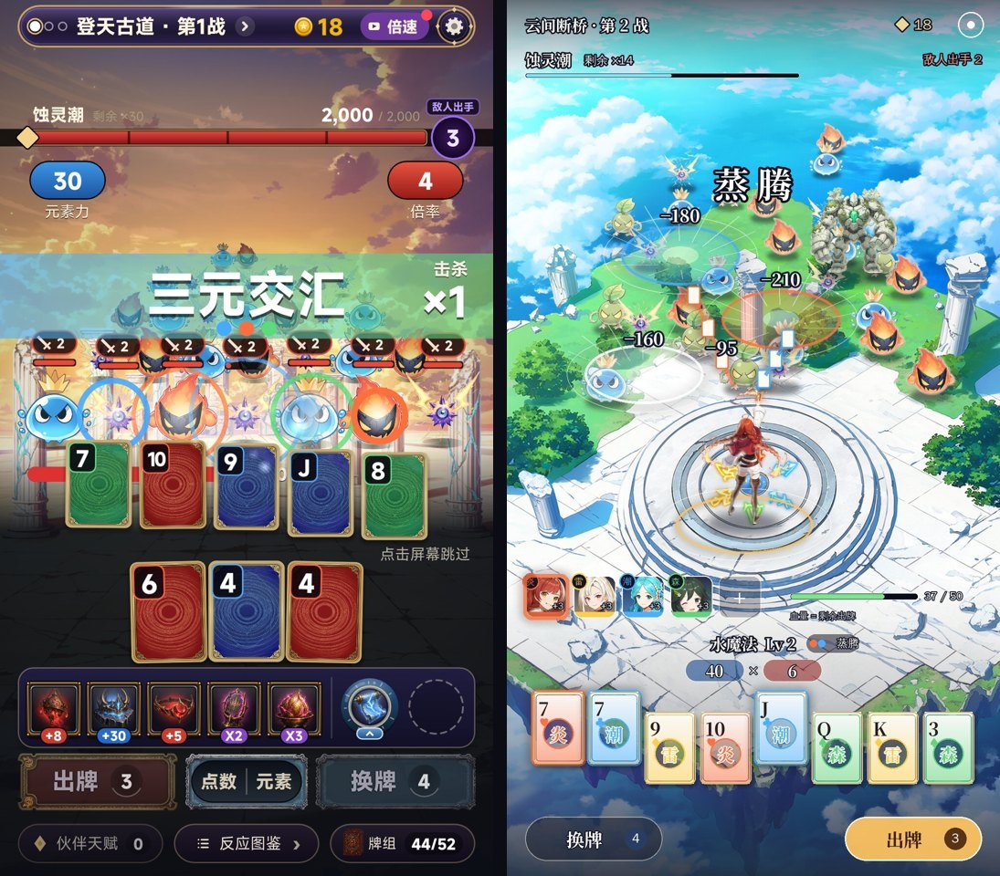

二代方案 v9：《源神：元素牌》战斗界面三套方案（全屏场景 + 透明界面）
- 日期：2026-11-12
- 你这次的要求：
- 牌还是叫元素牌，牌型叫元素魔法（沿用一代的火魔法、水魔法、冰魔法……）；
- 一代的装备图标换成伙伴头像牌，点开看全身立绘；
- 现在的战斗界面太乱，关卡场景和怪物没结合好。先出战斗界面方案，给三套；
- 要同时考虑单挑守关和 AOE 打群怪；
- 按原神的美术风格改，布局参考《宗师之上》：整个竖屏都是场景，界面能透明的地方都做成透明。
- 下面每套方案两张图：左边单挑守关，右边群怪 AOE。图是效果图，用 NovelAI 出的场景、角色、怪物合成，界面按游戏里的尺寸（1080 × 1920）画。
- 用词已经改进游戏：牌型恢复一代的元素魔法名字，768 个测试全部通过。
0. 结论先说
| 方案 | 镜头 | 适合 | 我的看法 |
|---|---|---|---|
| A 浮岛祭坛（推荐） | 3/4 俯视，主角站在画面中下方的祭坛上，怪从上方围过来；最像《宗师之上》 | 群怪 AOE 最清楚：一屏能看到 30 只，一手打倒一片看得最明白；守关时首领站在祭坛对面 | 推荐。割草感最强，做起来最省：怪不用按远近大幅缩放，场景一张图就够 |
| B 林间长路 | 主角背影站在左下方，越过她的肩膀往前看，路一直通到远处 | 单挑守关最有气势：首领正对镜头、占半个屏幕；原神式的第三人称视角 | 守关战最好看；群怪会挤在路中间，一手打倒多少只不如 A 清楚 |
| C 断崖斜阵 | 2.5D 斜角，主角在左下方侧身出招，敌人沿着斜坡排到右上方 | 首领从云海里升起来、背后是天空裂隙，像原神的过场；群怪排成一条斜线，一招扫过去 | 画面最有电影感；斜坡站不下太多怪，每张关卡图都要专门画成斜坡 |
推荐 A。守关战可以借 B 的做法：开打时镜头拉近首领 1 秒，再回到俯视。

现在为什么乱： - 中间有一条横穿全屏的血条，底部有一整块紫色装备面板，把屏幕切成三截，场景只剩中间一条。 - 怪物是贴在背景上的，没有影子、颜色和光线不一样，看起来是浮着的。 - 按钮、装备、手牌各有一块不透明的底，互相挤在一起。
三套方案共同的做法： - 整屏都是场景，不再有横穿的血条和装备面板。 - 界面只用半透明深色玻璃、白金细线，再加元素色点缀；文字带描边，直接压在场景上。 - 屏幕下方 30% 的高度从透明渐变到半透明，让手牌和按钮看得清；场景一直延伸到屏幕底部。
1. 方案 A：浮岛祭坛（3/4 俯视，推荐）

- 场景：浮在云海上的白石广场，中下方是刻着四元素符文的圆形祭坛，主角站在祭坛中央（照《宗师之上》，人在阵眼）。
- 单挑守关：
- 首领站在广场上方正对主角，头顶是首领名、一条细血条，下面写着「2 手后出手」的意图。
- 出牌时元素光束从主角射向首领，打中后炸开反应名和伤害数字。
- 群怪 AOE：
- 蚀灵从广场边缘、悬崖那头涌过来。
- 出牌后每张元素牌飞向一片怪，落地炸开对应颜色的圆环；圆环里的怪一起掉血、一起倒。
- 反应名（「蒸腾」）在怪群上方大字闪一下。
- 界面：
- 顶部一行透明的关卡名、源晶和设置。
- 左下一排伙伴头像牌，右边是血量（血量就是剩余出牌次数）。
- 中间显示元素魔法名、等级和这一手的反应，下面是「元素力 × 倍率」。
- 再往下是一排 8 张元素牌，最底下左边换牌、右边出牌。
2. 方案 B：林间长路（越肩第三人称）

- 场景：林间古道，两边是长满青苔的石拱和发光的水渠，路的尽头是一棵发光的巨树。镜头在主角身后，越过她的肩膀往前看。
- 单挑守关：首领站在路中间、占半个屏幕，背后有紫色的失衡光晕；主角甩出一串火牌，飞牌直接打在首领身上。
- 群怪 AOE：蚀灵沿着路一波波走过来；火焰沿着路面一路烧过去，炸开的圆环和数字都落在路上。
- 界面：
- 伙伴头像牌竖着排在右边，照原神的队伍栏。
- 元素魔法名和「元素力 × 倍率」放在左下，主角的背影旁边。
- 手牌和按钮和 A 一样。
3. 方案 C：断崖斜阵（2.5D 斜角）

- 场景：云海上的草地断崖，地面从左下斜着延伸到右上，右上角的天空裂开一道发光的水晶裂隙。
- 单挑守关：海蛇一样的首领从云海里升起，几乎占满右半屏；主角在左下侧身出招，光束斜着射过去。
- 群怪 AOE：敌人沿着斜坡排到右上方；一道潮水加雷电沿着斜坡扫过去，整条线上的怪都被打中。
- 界面：
- 伙伴头像牌放在顶部关卡名下面，下半屏全部留给出牌。
- 手牌排成扇形。
- 换牌和出牌做成两侧的胶囊按钮。
4. 场景和怪物怎么结合（回答「没有很好的结合」）
| 做法 | 现在 | 方案里 |
|---|---|---|
| 站在地上 | 怪是一排排贴在背景前面的 | 每只怪的脚底落在场景的地面上，离得越远越小（A 的俯视视角下远近差得少，B 差得最多） |
| 影子 | 没有 | 每只怪脚下都有一块和场景光一个方向的影子 |
| 光线 | 怪自带的颜色和背景不一样 | 怪按场景的光调色（A 晴天偏白，B 黄昏偏暖，C 暮色偏紫），边上加一圈场景光颜色的轮廓光 |
| 远近 | 没有 | 远处的怪往天空色淡一点（空气透视），近处的清楚 |
| 从哪来 | 凭空出现 | 从场景里有的地方涌出来：A 从悬崖那头爬上来，B 从路的尽头走过来，C 从裂隙里掉下来 |
| 首领和场景 | 和小怪一样贴着 | 每个首领有自己的场景：炎之领主在广场、失衡之主在长路尽头、潮之领主从云海升起 |
| 特效 | 白色飞牌 | 牌的元素色决定光束和圆环的颜色，落在地面上，带透视（圆环压成椭圆） |
这些在游戏里都能做：脚底影子、调色和淡出都是给怪物图片加一层颜色和透明度，NanoVG 本身就支持；地面透视就是按怪物脚底的高度算缩放。v8 实机已经有「按排缩放」，改成按场景的地面算就行。
5. 伙伴头像牌（替换一代的装备图标）

| 点开：全身立绘 + 技能 | 说明 |
|---|---|
 |
在战斗中点头像牌，整个界面压暗，弹出全身立绘、名字、元素、星级和技能。技能就是一代那件装备的效果（焰绯 = 一代「打出红桃每张倍率 +3」那件）。底下一排头像可以左右切换。 |
- 头像牌在三套方案里都有：A 放在手牌上方，B 竖排在右边，C 放在顶部。
- 出牌时触发了哪位伙伴，她的头像就亮一下，并弹出数值（就是一代装备触发时的跳字）。
- 一代 150 件装备里，常用的约 30 件做成伙伴，其余做成「器物」，用器物图标。
6. 用词（已改进游戏）
| 东西 | 叫法 |
|---|---|
| 牌 | 元素牌（♥ 炎、♦ 雷、♣ 潮、♠ 森） |
| 牌型 | 元素魔法，沿用一代的名字：火魔法（高牌）、水魔法（对子）、风魔法（两对）、土魔法（三条）、冰魔法（顺子）、雷魔法（同花）、光明魔法（葫芦）、黑暗魔法（四条）、时间魔法（同花顺）…… |
| 这一手的花色组合 | 反应名（纯表现，不改分数）：蒸腾、爆燃、燎原、链电、萌发、雷藤 |
| 装备 | 伙伴 |
7. 选定之后怎么做
- 按选定的方案重写战斗界面：去掉横穿的血条和装备面板，界面全部改成透明或半透明。
- 怪物站位改成按场景的地面来排，加影子、调色和轮廓光。
- 装备栏换成伙伴头像牌，加点开看立绘的弹窗。
- 每段路出一张对应视角的场景图（8 段路，每段一张战斗场景，再加一张首领战场景）。
- 做好后录实机截图和录屏给你看。
8. 要你定
- 选哪套：A 浮岛祭坛（推荐）/ B 林间长路 / C 断崖斜阵？也可以混搭，比如「A 打小怪，守关时镜头拉近成 B」。
- 名字：还用《源神：元素牌》吗？上一版提过，这个名字有被当成仿冒《原神》的风险。
- 伙伴全是女性角色，还是男女都有？
9. 附：之前的方案
| 版本 | 内容 | 结果 |
|---|---|---|
| v8 | 《源神：元素牌》题材包装 + 实机换皮（docs/v2/立项方案_v8.md） |
题材定了；战斗界面太乱 → v9 |
| v7 | 扑克地牢（战斗照《吸血鬼爬行者》，实机） | 战斗框架保留 |
| v6 | 调色师（实机切片） | 没有正常战斗的体验 |
| v5 | 乐队 / 调色 / 烟花（概念图） | 选了调色 → v6 |
| v4 | 新怪谈 / 深海 / 地府 | 和玩法不搭、画风低 |
| v3 | 仙门降妖（第一次照《宗师之上》做布局） | 题材不新、页游感 |
| v2 / v1 | 武侠 / 末日 | — |